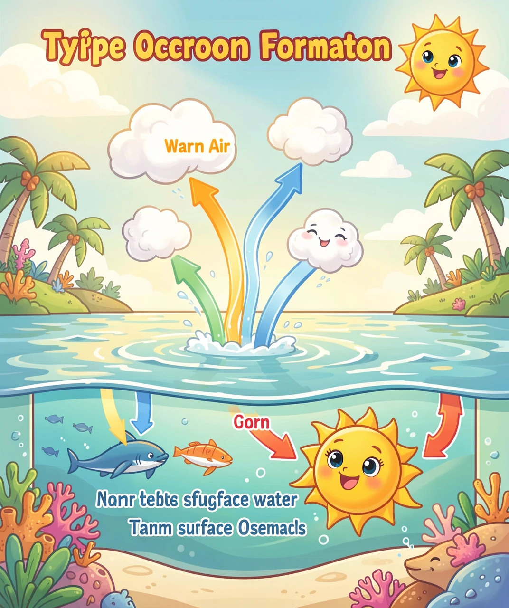
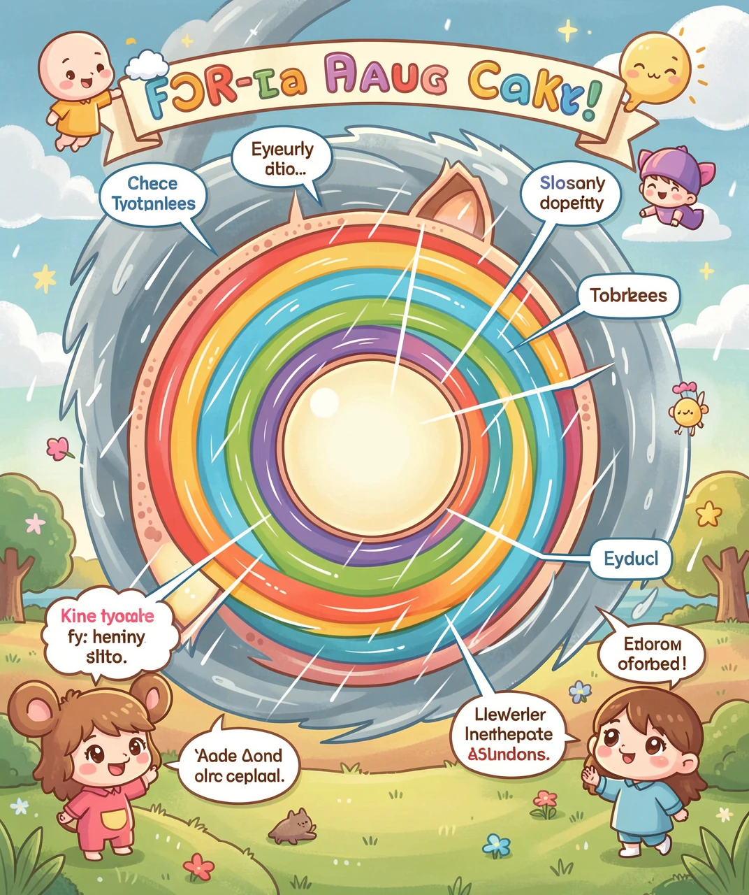
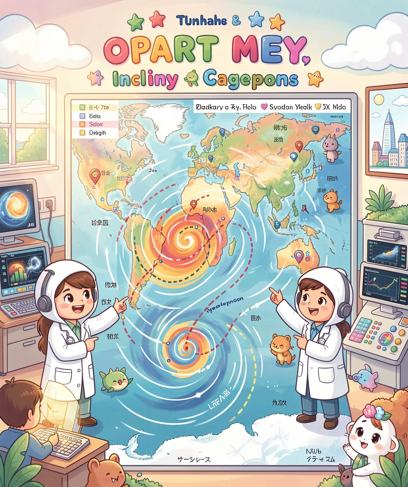

跟肉肉一起揭开「海上巨无霸」的诞生秘密
每年夏天，新闻里总会出现一个熟悉的名字：「台风」。有时候它叫「山竹」，有时候叫「烟花」，有时候叫「杜苏芮」。它们从哪里来？为什么都有一个好听的名字？
台风其实是一种超级大的风暴，它诞生在海上，直径可达几百甚至上千公里——比一座城市还要大！从太空看，它就像一个巨大的白色漩涡，中间还有一个圆圆的「洞」，那就是台风眼。
今天，我们就来当一回「天气侦探」，看看台风到底是怎么变出来的！
台风在不同地方叫法不一样：在中国和日本叫「台风」，在美国叫「飓风」，在印度叫「气旋」，但它们其实是同一种东西！就像一个男孩在中国叫「小明」，在美国可能叫「Tom」。

台风不是凭空出现的，它需要一套特殊的「配方」，就像做蛋糕需要面粉、鸡蛋和糖一样。
配方一：热乎乎的海水。海面温度必须超过 26.5℃，就像一口烧热的大锅。太阳把海水晒得暖洋洋的，大量水汽蒸发升上天空。
配方二：地球自转帮忙。地球一直在转，这股旋转的力量会让上升的水汽开始打转，就像冲马桶时水流会自动旋转一样。
配方三：充足的水汽。水蒸气升到高空后遇冷变成水滴，释放出大量热量，就像给风暴「加油」，让它越转越快、越来越大。
三个条件凑齐，一台天然的「台风制造机」就开动了！
台风最喜欢在哪「出生」？答案是西北太平洋。这里海水够热、水汽够多，一年能「生」出大约 25 个台风，是全世界台风最多的海域！

如果把一个台风从中间切开（当然这是不可能的！），你会发现它的结构就像一颗夹心糖，分成三层：
最中间——台风眼 🕳️：这是台风最神奇的地方。外面狂风暴雨，但台风眼里却风平浪静、甚至能看到蓝天！直径大约 20-60 公里，就像一个巨大的天井。很多经历过台风的人都说：「风突然停了，以为结束了，结果几分钟后又来一阵更猛的！」那是因为台风眼刚刚路过。
紧挨台风眼——眼墙 💪：这是台风最凶猛的地方！风速能达到每秒 60 米以上，是台风力量最强的区域，也是最危险的地方。
最外面——螺旋雨带 🌧️：一条条弯曲的云带像手臂一样伸展开，带来阵阵暴雨。离中心越近，雨越大、风越猛。
你有没有想过：台风眼里为什么没风？因为台风旋转得太快了，就像你甩一根绳子上的小球，球会被「甩」到外面。台风中心的空气也是被离心力「甩」出去的，所以中间反而空了！

你有没有好奇过：台风为什么叫「山竹」「烟花」「杜苏芮」？这些名字可不是随便起的！
世界气象组织规定，西北太平洋和南海的台风名字由14个国家和地区共同提供，每个国家或地区贡献 10 个名字，排成一张大表轮流使用。中国贡献的名字有「龙王」「悟空」「海神」等；日本贡献了「天秤」「山猫」；泰国贡献了「榴莲」「山竹」……
如果某个台风造成了特别严重的灾害，这个名字就会被永久退役。比如 2018 年的「山竹」和 2019 年的「利奇马」，因为破坏太大，永远不能再用了。
这样一来，每个台风都有自己独一无二的身份，气象学家和公众就能清楚地知道「说的是哪一个台风」。
你知道吗？台风命名表里还有「玫瑰」「茉莉」「海鸥」「鸳鸯」这些温柔的名字。但温柔的名字不等于温柔的台风——2014 年的「海鸥」可是超强台风！
台风的威力虽然很大，但我们不用害怕，因为现在气象卫星可以提前好几天看到台风的动向，人们有充足的时间做准备。
台风来临前：
✅ 收听天气预报，了解台风的路径和到达时间
✅ 和爸爸妈妈一起检查门窗，用胶带在玻璃上贴「米」字形，防止玻璃破碎伤人
✅ 准备好手电筒、饮用水、食物和充电宝，以防停电
✅ 把阳台上的花盆和杂物搬进屋里
台风来临时：
❌ 不要出门玩！狂风可能把树枝、广告牌吹落
❌ 远离窗户和玻璃门
❌ 不要到海边看大浪——那一点也不好玩，非常危险！
在安全的家里和家人待在一起，台风很快就过去了。台风虽然可怕，但只要我们做好准备，它就是一场「有惊无险」的大自然表演。
你知道吗？现在气象卫星可以每 10 分钟给地球拍一张照片，台风从出生那一刻起就被科学家们「盯上」了。所以不可能有台风「突然袭击」——它早就被看到了！
1. 台风需要在怎样的海水温度下才能「出生」？
2. 台风最中间、风平浪静的地方叫什么？
3. 台风在美国叫什么？
4. 以下哪个不是台风形成的必要条件？
5. 台风来临时，以下哪种做法是正确的？